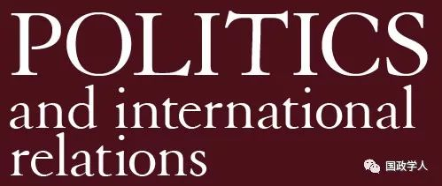

收录于合集

简 介
【 作者 】 胡高辰 ，清华大学社会科学学院国际关系学系2015级博士研究生；李彬，清华大学社会科学学院国际关系学系教授，清华—卡内基全球政策中心高级研究员。研究方向为中美核关系、军备控制、出口管制等。主要著作有《军备控制理论与分析》《理解中国核思维》（合编）等。
【 编辑】 李博轩-国政学人
【 校队 】王国欣-国政学人
【 来源 】《国际论坛》2018年第4期
摘要
稳定—不稳定悖论诞生于冷战初期，用于描述核武器的威慑效应与国家常规军事层面安全的互动关系。随着近年来学界的研究深入，稳定—不稳定悖论的逻辑错误逐渐凸显，但当前美国战略学界依然出现用该悖论评述中国带来安全威胁的观点，本质上这是由美国安全研究范式导致的。基于能力和意图来判断国家安全威胁是美国安全研究范式的特点，美国基于这一标准做出的安全举动往往带有对抗性和单边主义色彩。结合当前美国政府的安全政策倾向，美国在安全领域的单边主义举动，会导致美国做出更多不利于地区和平稳定的行为，进而对未来国际和地区的安全态势造成消极影响。
关键词： 稳定—不稳定悖论 中美战略关系 安全研究范式 国家安全威胁

正 文
自核武器诞生之日起，核武器所带来的威慑效应为国家间政治提供了新的互动元素，核威慑如何有效、何时有效等话题，成为了战略学界关注的重要问题。在２０世纪五六十年代，恰值冷战对抗朝着加剧的方向发展，美国战略学界一些学者探讨了核武器的威慑作用与常规军事力量的互动关系。这些学者认为，如果两个国家都拥有核武器、构建了相互战略威慑的关系，那么谁都不敢轻易地使用核武器，以免遭到对手的报复性打击，导致不可接受的损失；但是，既然战略层面没人敢轻举妄动，那么常规军事层面的摩擦可能会增加。 **战略学界把这一观点称之为稳定 —不稳定悖论（stability-instability paradox），即战略层面的稳定，有可能会带来常规层面的不稳定。**在冷战时期，美国战略学界常用这一理论描述和阐释苏联的扩张行为。当时，这一理论似乎受到政策理论界的青睐。
作为一个诞生在冷战时期的理论概念，稳定—不稳定悖论实际上并不是一个完备、完整的理论，近年来，学界也意识到了这一问题。看似简单的“战略稳定导致常规不稳定”的逻辑推导，背后通过细致的调研可以发现存在一些逻辑上的不恰当和不完备之处。近年来，中美两国的安全互动备受关注，美国战略学界出现了用稳定—不稳定悖论的逻辑思路来评述中美安全关系的声音，美国战略学界的这一做法， **一方面继续暴露了稳定 —不稳定悖论的逻辑错误；另一方面，也能从中反映出美国对安全威胁研究范式的特点，这一特点恰又可以反映出美国在安全理论制定方面较浓的单边主义色彩。**本文试图以稳定—不稳定悖论为切入点，剖析该理论的逻辑错误所在、并结合美国战略学界对中国的评述，探究美国安全研究范式以及其理论机理，剖析美国安全政策对国际社会带来的影响。
** 一、稳定—不稳定悖论的内涵和逻辑漏洞**
（一）悖论的理论内涵
回顾稳定—不稳定悖论的历史，可以追溯到冷战初期。在早期美国战略学界的著作中，稳定—不稳定悖论的逻辑内涵就已出现。1946年，弗雷德里克·邓恩（Frederick S.Dunn）等五位作者编纂的《终极武器》（The Absolute Weapon: Atomic Power and World Order）一书中，伯纳德·布罗迪（Bernard Brodie）提到一个比喻，即一个人不会用打大象的枪去射一只兔子，尤其是当大象还存在时。这一观点中，不要用打大象的枪射击兔子，表明了用核武器打击非战略目标是没有意义和价值的，对不同层级的目标要用相应层级的武器， 这一说法无形中为战略层面与非战略层面划了一道界限，不同冲突层面要用不同级别武器。 这一观点的提出，为后来者研究战略领域和非战略领域的稳定与不稳定关系提供了带有启示性的思路。
20世纪60年代，有西方学者对战略层面的稳定态势和非战略层面、抑或常规层面的稳定态势之间的关系有所发现。利德尔·哈特（B.H. Liddell Hart）在1960年所著的《威慑或防御》（Deterrent or Defense, a French Look at the West’s Military Position）一书中提到：氢弹的出现减少了全面战争的可能性，但是它增加了有限战争和局部冲突的可能性。这一思路正是稳定—不稳定悖论较为典型的理论要义，哈特的研究以核武器的角色和作用为出发点， 指出拥有核武器的国家由于彼此忌惮对方的战略核武器而使得战略层面获得了稳定 ；但是，战略层面的稳定反倒使低水平冲突爆发的可能性增加，即核武器在非战略层面可能导致不稳定效应。
最为西方学界所熟知的稳定—不稳定悖论的提出学者当是格伦·斯奈德（Glenn Snyder），斯奈德对稳定—不稳定悖论做了较为详尽的逻辑论述。
1961年，斯奈德在其著作《威慑与防御》（Deterrent and Defense: Toward a Theory of National Security）一书中提到：虽然苏联考虑到（美国）大规模报复（核报复）的风险，但是还有一系列小的冒险行为可以尝试，尽管在客观上依然存在遭到报复的风险。1965年，斯奈德在保尔·西伯里（Paul Seabury）所著的《权力的制衡》（Balance of Power）一书中提到：战略层面存在稳定的恐怖的平衡，低水平的层面（即非战略层面、或常规层面）的稳定性就会差的很多、出现各种低水平的暴力。斯奈德在这本书中可以说点出了稳定—不稳定悖论的核心思路。
斯奈德的观点指出了战略层面和非战略层面、抑或常规层面存在着一种可信的互动关系，根据这一逻辑，战略层面越是稳定，则非战略层面、抑或常规层面越是有可能出现不稳定。同时，斯奈德还对非战略、抑或常规层面的冲突的交互关系做了阐述。斯奈德在书中指出，尽管战略层面的稳定性会减少非战略层面、抑或常规层面的稳定性，但是，由于非战略、抑或常规层面的不稳定有升级的风险，所以，这一升级的风险实际上对非战略层面、抑或常规层面的冲突也起到了一个威慑作用。即 **战略层面的稳定可以带来两类效应，其一是导致非战略层面、抑或常规层面的不稳定；其二是，这一不稳定行为会因为升级的风险而维持在 “稳定”的低水平。**通俗的理解，后者的含义是，由于存在升级的风险且两个国家都担心升级为更大规模的、不可控的冲突甚至升级为核冲突，从而使得两个国家对非战略、抑或常规层面的小冲突也存在着一种“克制”，这使得非战略、抑或常规层面的冲突“稳定”地保持在低水平。斯奈德的论述被西方战略学界普遍认为是稳定—不稳定悖论的经典出处。
（二）悖论的理论漏洞
虽然稳定—不稳定悖论诞生于冷战、且其理论初衷是用于评述美苏冷战期间苏联的扩张行为，例如美国学者评述苏联在非洲、东南亚的扩张等，但近些年则主要被战略学界用于对印巴两国安全关系的研究，随着对该理论研究的深入，其逻辑的漏洞也逐渐凸显。
1. 常规层面可能在构建战略稳定前更不稳定
稳定—不稳定悖论的理论要义是，构建战略稳定关系后，两个拥有核武器的国家之间在战略层面的稳定会导致非战略层面、亦或是常规层面的不稳定。但是，存在一种情况是构建战略层面稳定之前，这两个国家本身就在常规层面已经是不稳定的，即两个国家构建战略层面稳定之前，常规层面亦或是非战略层面，比起构建战略稳定之后是更加不稳定的。
印度和巴基斯坦的案例就符合这一情况，冷战后，稳定—不稳定悖论被学界用于分析南亚地区印巴两国的安全关系，较为典型的诸如迈克尔·克雷庞（Michael Krepon）将南亚地区战略稳定和常规层面不稳定与如何对冲突管控、避免升级相结合的研究论述。此外，学界常用卡吉尔冲突（Kargil War）作为案例。1999年的卡吉尔冲突恰发生在1998年印巴两国各自公开宣布获得核武器之后，因此，就有学者指出，巴基斯坦的核能力在巴基斯坦决定发动卡吉尔地区的进攻时扮演了关键的角色，如果没有核武器，巴基斯坦就缺乏了足够威慑印度的能力，正是因为有了核武器（战略层面稳定），才使得巴基斯坦不再忌惮印度可能实施的大规模报复行为，印度也对于巴基斯坦发动的小规模进攻（常规层面不稳定）无从应对。
而实际上，印巴在实现战略层面稳定之前的常规战争（不稳定状况）比起实现战略稳定之后（1998年）的烈度还要大。即按照稳定—不稳定悖论的逻辑，战略层面实现稳定后反而常规不稳定，而实际上，印巴在构建战略层面稳定前常规层面更加的不稳定，两个国家建立战略层面稳定关系之前，常规层面发生的是高烈度大规模的常规战争，即三次印巴战争，而建立战略层面稳定之后，则多是一些规模烈度较之前的战争要小得多的边境摩擦。
稳定—不稳定悖论似乎没有考虑到两个国家战略稳定关系构建之前的常规层面情况究竟是已经稳定了的，还是处在更加不稳定之中。如果是已经稳定了，这个理论在逻辑上就是通顺的。这一理论默认为两个国家实现战略层面稳定之后的常规层面是更加不稳定的，可构建战略层面稳定之前的实际情况如何呢？该理论似乎就默认两个国家构建战略层面稳定之前是相对之后更加稳定的，以此来凸显构建战略层面稳定之后两个国家在常规层面更加不稳定。这一逻辑思路有失一个理论应有的客观性。
2. 常规层面不稳定的判断标准随意
稳定可以用一些特定的专有名词来解释，例如战略稳定性等；而不稳定没有办法被具体地量化衡量，因此只能用相对衡量标准来进行判断。这里存在一个相对的比较关系，即稳定—不稳定悖论认为，构建战略层面稳定之后的常规层面比构建战略稳定之前显得更不稳定，可是如何界定常规层面的不稳定？什么样的情况叫做常规层面不稳定？战略学界似乎更多的是用其个体案例来界定，哪些常规冲突的情况对自己的研究有利，就把它认定为不稳定。
究竟是正规军之间的常规冲突算作不稳定？还是常规军事力量的对峙即算做不稳定？在研究印巴的案例中，学者对于印巴的直接武装冲突尤其是卡吉尔冲突，大多认为是常规层面不稳定的表现。按照这一标准，武装冲突即算作常规不稳定，那么冷战的情况可以说是稳定的，因为美苏之间没有爆发直接的军事冲突，可研究美苏的学者却把冷战中苏联的扩张和支持一些地区国家颠覆政权的行为归于稳定—不稳定悖论中常规不稳定的范畴。由此可见，学界对常规层面不稳定的表述和定义存在随意性， 即学者往往根据案例的范围定义各自的 “不稳定”，没有一个统一的不稳定标准，这使人们对于稳定—不稳定悖论的理论逻辑完备与否产生了疑问。
** 二、悖论在中美战略问题中的应用**
（一）美国对华战略关系呈现矛盾性
稳定 —不稳定悖论在应用中的另一个逻辑漏洞是只考察和批评一方的行为，这在近些年应用该悖论评述中美关系的研究中较为常见。中美关系包含非常丰富的内容和复杂的内涵，既有合作性又有竞争性。过去一些年，在中美合作不断推进的同时，两国之间的竞争性事件也此起彼伏。
战略稳定性（Strategic Stability）是描述两个国家竞争关系的一个重要指标，可以为我们理解中美关系提供一个新视角。战略稳定性是研究以核武器为要素的国际安全关系的重要概念，其主要含义是 两个国家的核力量结构使得任何一方都没有动机发动核进攻，即两个国家的核力量皆具备可靠的二次打击能力，任何一方发起先发制人的核打击都会遭受对方的核报复打击，且这一核报复打击能给先发动核打击的国家带来不可接受的损失。 这样一来两个国家即便出现摩擦、陷入危机，也不会考虑使用核武器，核武器的使用动机很少。
如果中美两国安全专家普遍认定对方拥有可靠的核报复能力，并接受这种状态，而不是通过发展本国的战略核对抗能力来抵消对手的核报复能力，那么两国就不会试图发动核攻击，也不会以发动核攻击相威胁。这样，战略稳定性就为两国关系的竞争划了一条底线。当两国的合作关系占主导地位时，战略稳定性划出来的底线并不引人注目；但当严重的安全竞争性事件触动两国关系的时候，战略稳定性可以引导两国政府谨慎行事，通过对话走出危机，而不是单纯诉诸武力或以武力相威胁。
美国的核武器实力极为强大，在中国并不存在不认可美国核报复能力的现象。 因此，是否接受中美战略稳定性就只是一个单边的问题，即美国政府和安全专家是否接受中美战略稳定性。这里包含两个基本层面。第一个层面是，是否认定中国拥有核报复能力。这是一个实证的角度，反映了美国决策参与者对中国实力的判断。第二个层面是，是否愿意接受中国拥有核报复能力。这反映了美国决策参与者的担心和敌视程度。
当今世界与美国存在竞争关系的拥核国家或试图拥核的国家中，美国主流的看法是接受美俄之间的战略稳定关系，但不接受朝鲜这样的国家拥有核武器，更不要说与其建立战略稳定关系。中国的核武器实力处在一个中间的地位：弱于俄罗斯，强于一些试图获取核武器的国家。因此，从实际角度来看， 中国究竟是小 “莫斯科”还是大“平壤”，美国战略学界出现了各种不同甚至对立的声音。
支持中美存在战略稳定关系的学者的观点也不尽相同。有的从宏观角度认为中美存在战略稳定性、抑或相互脆弱是事实而不是美国的政策选择（mutual nuclear vulnerability should be considered as a fact of life for both sides）；还有的学者以中国的战略威慑能力为切入点，认为中国的核武器具备足够的生存能力，具备有效威慑性；其中，战略核潜艇由于其可靠的生存能力和隐蔽性，是一国战略威慑能力的重要标志，有学者专门对中国海基核威慑能力的有效性予以肯定，认可中国海基核威慑能力。
而反对中美存在战略稳定关系、抑或持回避观点的学者在美国战略学界也不在少数，这些美国安全专家从自身的意愿出发，不愿正视或者承认中美战略稳定关系。他们的逻辑之一是中美战略稳定关系不利于美国在世界上的主导地位，之二是中美战略稳定关系不利于盟国的安全。前者的观点态度清晰，即不希望中国动摇美国的霸主地位，例如从技术角度，认为中国的洲际弹道导弹不可能快速发射，需要准备许久，面对美国的第一波打击，中国的导弹不可能在被摧毁前发射出去等等；此外，美国要维持霸权、保持战略优势地位、不能轻易地让中国赶上等也是一种主要的声音。而后者的观点就可以用稳定—不稳定悖论来描述，其含义是：如果美国接受与中国之间的战略稳定关系，那么中国就不会担心来自美国的核攻击，从而中国就会在常规军事层次变得肆无忌惮，可能会利用不断提高的常规军事实力对美国东亚盟国，例如对日本进行常规军事层面的施压，从而导致常规层面的不稳定。
持这一观点的学者包括布拉德·罗伯茨（Brad Roberts）这样的美国前政府安全问题高级官员，他的观点就是：从美日同盟的视角看，如果美国承认与中国的战略稳定关系，可能会让日本等盟友认为是对自己核保护伞的放弃，把这些盟友置于中国常规军力的威慑之下；中国不断增长的战略威慑能力，会使美国的先发制人打击变得越发不可信，从而使中国逐渐扩张，增加在海洋争议问题中的进攻性姿态。持这一观点的学者不占少数，一些主要智库对中美战略稳定性的构建与日本的关系也进行了研究。
（二）美国观点的不当之处
实际上，美国学者用稳定—不稳定悖论对中美关系的评述，恰反映了它的第三个逻辑错误，即应用时只考察和批评一方的行为。
在调研稳定—不稳定悖论的已有研究成果时发现，对研究当事国往往只提到某一个，而不是双方都有提及，似乎使用该悖论的学者有意地使用该理论批评自己认为错的一方，而忽略自身国家的情况。这样的表述也是有失理论完备性的表现。
美苏也是稳定—不稳定悖论这一理论出现时期的主要案例来源。从历史上看，战略学界普遍的表述是，美苏在构建战略稳定关系后，苏联在常规层面所进行的军事扩张或军事挑衅行为是符合稳定—不稳定悖论的，即苏联获得了可靠的核威慑能力，因此对美国的核威慑不再忌惮，常规层面才进行了扩张和挑衅，导致了常规层面的不稳定。这是早期美国战略学界普遍接受的观点。但 判断两个国家常规层面是否稳定，需要考察当事国双方的行为， 如果美国也因为与苏联构建了战略稳定关系而实施扩张，即美苏构建战略稳定——美苏都进行常规军事扩张——导致冲突对抗和摩擦，这样的情况才符合稳定—不稳定悖论的研究逻辑。但实际上，战略学界的研究往往回避了美国的做法，而是单纯的指责苏联是破坏稳定的一方。
美国单方面指责中国是破坏常规稳定的一方，并对中国采用了一种反向的“设想”，通俗的理解即：由于中国的核报复能力还没能达到可信的威慑水平，因此为了保护盟友的安全，就要避免与中国构建战略层面的稳定。 **从稳定 —不稳定悖论的逻辑视角出发，这一设想的过程实际上忽略了美国在中美安全互动中所带来的负面作用，而只考察了中国一方的行为且还是设想出来的中国的行为。**从实际情况看，美国从历史上一直是亚太地区安全环境不稳定的始作俑者，是破坏亚太地区战略稳定的行为体，例如美国近年来在中国周边不断实施的海空抵近侦察，打着“航行自由”旗号派遣军事力量进入中国周边海域等不利于稳定的行为，而中国近些年的军事现代化是针对美国消极举动的防备行为。实际上，美国是导致中美两国以及亚太地区常规层面不稳定的一方，而美国学者把一直在努力维持亚太地区和平稳定的中国假想为破坏稳定的一方，忽略了美国自身的行为对亚太地区安全稳定环境的破坏。基于这种设想给出批评恰反映出稳定—不稳定悖论的逻辑错误，也显示出了美国在安全领域有失公允的思路模式。若探索其更深层次的原因，需要对美国安全研究范式进行剖析。
三、美国安全研究范式的特殊性
如上文所述，美国战略学界通过设想的方式认为：若中美构建战略稳定性亦或美国承认中美存在战略稳定关系，会使得中国不再忌惮美国的战略核威慑，从而使美国对亚太盟友的核保护伞失效，中国会凭借优势的常规军事力量对日本、韩国及美国驻亚太地区的军事力量构成安全威胁。从深处来看，这一思路反映了美国对安全问题的研究范式的特点。
美国的安全研究范式是对国家安全威胁（ n ational security threat ）进行考量，在美国看来，国家安全威胁就是可能对美国带来伤害的外部敌人。 这里有两个关键的概念，其一是“可能给美国带来伤害”，其二是“外部敌人”。
外部敌人这一概念的理解较为容易，不光是美国，任何国家在国家安全层面主要的安全威胁都是外部的。国内能够对国家安全带来影响的因素由国内安全部门或相关机构处理，例如美国的国土安全部、众多情报、执法机构等。
美国的安全研究范式其重点在于前者，即：可能给美国带来的伤害。这一概念又包含两层含义， 其一是能力，即具备能够给美国带来伤害的军事能力 ，至于这一能力是不是真的如美国所认为的能够给美国带来伤害，用实证的研究较难予以明确的界定。这一能力的判断主要是基于美国自身的考量，美国认为对手的能力能带来伤害，那么这一能力就被美国纳入分析国家安全的范式之中。 其二是意图 ，即美国认定，某一个外部敌人有对美国带来伤害的意图，即对美国怀有敌意或是与美国处在安全领域的竞争态势中。
从这一角度出发，以英国为例，英国的战略实力也是处于世界前列水平的，尤其是英国的海基核打击力量，其现役的“前卫”级战略导弹核潜艇性能指标优异，从能力角度看，理论上英国的战略导弹核潜艇可以对美国本土构成安全威胁；可美国并没有把英国视作国家安全威胁，原因在于英国是美国的盟友，英国有能够伤害美国的“能力”、但没有伤害美国的“意图”。
对比起来，朝鲜近年来不断进行核武器与导弹武器的试验，使得朝鲜逐渐具备了一定的理论上的核作战能力，同时，朝鲜在各种场合、各种官方宣传中表达了对美国有敌意的言论，因此，朝鲜和美国之间的对抗性态势，使得美国把朝鲜视为具备伤害美国意图的外部敌人。在这一思路下，即便朝鲜的战略武器实力远不及英国，但是朝鲜有潜在的伤害美国的能力，同时美国认定朝鲜也有伤害美国的意图，因此美国在国家安全的研究分析中“斩钉截铁”地把朝鲜看做国家安全威胁。客观的说，这里的“意图”也是美国单方面认定的，有些国家或许并不是真的对美国存在敌意，但是由于存在竞争关系，美国也会单方面认为该国有伤害美国的意图。
美国的“国家安全威胁”有明确的敌人。这点就决定了 美国的安全战略往往带有较强的针对性，即针对某一国家、某一地区、甚至某一对手的某个军事能力而进行军事部署、制定军事战略。 其次，美国的“国家安全威胁”一旦确定敌人，大多时间决策者会想象这个敌人会如何运用它的军事能力对美国构成安全威胁。除了基于稳定—不稳定悖论的思路设想中国会对美国的亚太盟友带来军事威胁，近些年另一个较为典型的例子就是美国对所谓的中国A2/AD能力的表述。
A2/AD（Anti-Access/Area Denial）中文称之为反介入、区域拒止作战能力。这是美国政界和军方人士挖空心思杜撰的带有中国威胁论色彩的词汇，A2/AD的含义是中国发展了能够在西太平洋地区的陆地、海洋和空中阻止外国军力、尤其是美国军事力量自由活动的战区级先进军事能力。从武器装备具体来看，美国提出中国所具备的A2/AD能力，主要包括先进的战区级武器，例如东风21等型号的弹道导弹、各类型号的反舰导弹、巡航导弹以及新型水面舰艇、潜艇、作战飞机等。美国提出中国发展A2/AD 能力存在逻辑上的缺陷，这一缺陷把美国的“刻意”性暴露无遗。美国提出中国的A2/AD，对中国武器装备的采样具有局限性，中国近年来军事装备的发展是全方位的，而美国只选了对美国提出中国具备对美国带来威胁有利的样本，忽略甚至可以说刻意回避了整体。其次，对武器能力的采样也有局限性，忽略以及刻意回避了其他作用，中国的中近程弹道导弹等战区级先进中短程武器，其作用不完全是进行美国所谓的A2/AD作战。而美国则忽略了武器装备能力的多样性，把其中用于进行所谓A2/AD作战的能力，上升为中国发展A2/AD战略。
早在2007年，美国兰德智库以颇为吸引眼球的“闯入龙潭”（Entering the Dragon’s Lair）为标题发布了所谓中国的区域拒止战略报告，美国学者也对所谓的A2/AD战略从中国防御性政策的历史、理论等维度进行了各类研究。2017美国国防部发布的2017中国军力报告中，就用了一定篇幅论述了中国会以何种形式进行所谓的A2/AD作战。美国的这一做法，本质上就是美国以“能力”和“意图”为标杆所臆造出来的所谓中国的敌意。
**美国在研究国家安全问题时，往往是带有 “进攻性”，即大多时间是主动臆想对手的某一军事武器会给美国造成哪些威胁，从而想尽办法去抵消对手的能力。**从美国对国家安全研究范式的特点看，也就可以理解为什么美国战略学界会普遍接受稳定—不稳定悖论的逻辑，想象中国会在常规军事领域做出更多带有侵略性的举动。因为美国把中国的常规军事力量看做是对美国盟友、美国在亚太地区军事力量的威胁。美国认为，随着中国近些年的发展，中国的常规军事力量具备了威胁美国亚太盟友、美国在亚太地区利益的能力；同时，中国由于领土争端、国家崛起需要等原因，也有与美国在亚太地区对抗的意图。
美国的这一安全范式思路在美国国内高校、战略学界、安全学界以及政界和军界较为普遍，中国被美国冠以了“能力”和“意图”，从美国的国家安全研究范式看，中国是美国在亚太地区的国家安全威胁，因此，臆想中国、想象中国的“侵略”行为，也就符合美国的逻辑范式。这也就是美国用稳定—不稳定悖论，臆想中国会对美国和其亚太盟友带来威胁的本质原因。
四､结论
**新兴大国被认为是外向型的 ,它会展现出竞争性的国际形象,并会在时间和地点允许的情况下进行扩张。**有史以来,人们普遍认为,一国人口和经济的增长一定会带来领土面积的增加以及在其他地区政治影响力的增强,这仿佛是一条不可抗拒的自然法则。 在国家利益的驱使下 ,新兴大国的领导人会利用各种机会来扩大本国的影响力､权力和地位,但不会是不计后果的。换句话说,理性的领导人会尽量避免扩张和帝国野心,因为这样做会有刺激强大对立联盟形成的风险。
然而,新兴大国的声望和地位诉求会遭到抵制——来自于守成大国的阻挠——是完全在意料之中的。新兴大国需要在公众的注目中获得自己应有的地位,尽管它明白,守成大国建立了现有秩序,它们是不可能让出自己在当前体系中享有的威望､势力范围和特权的。因此,新兴大国通常会被描绘成一个制造麻烦的国家——作为修正主义的挑战者,它们会以牺牲保守派为代价,用尽一切手段扩张自己的政治和军事影响力。正如对扩张的需求看起来是一国发展的逻辑,反对这种扩张的冲动也是霸权衰落国的逻辑。这两种逻辑结合在一起,促使新兴大国内部出现了一种被包围的叙事,即既有强国力求尽早扼杀新兴力量。这一切都为新兴大国中一股强大的外向型民族主义力量提供了肥沃的土壤。
这并不意味着新兴国家的发展会完全被外部因素干扰。像所有国家一样,新兴大国是两面的,它既是内顾的也是外向的。毕竟,快速而戏剧性的国家实力增长会引发巨大的社会和政治混乱。因此,随着国家的发展,它的统治者越来越需要持续地在国内社会和国际经济之间作出调节——定期调节以维持公民､国家和市场之间的平衡,因为他(它)们都能够促进国家稳定､持续的发展。
在新兴大国中,外向型民族主义是对国家高速发展以及在其激励下产生的民族骄傲和爱国精神的自然回应。即便如此,在另外两种更加隐秘和间接方式的作用下,外向型民族主义情绪也能够产生,并被用于实现国内目的。首先,与战争的转移理论一样,它将公众对国内问题的关注转移到了阻碍新兴大国获利的外部因素和敌人(外群体)身上,无论这些因素是真实存在的还是被臆想出来的。其次,正如杰克·斯奈德(Jack Snyder)所言,以(帝国)扩张为中心的民族主义——这种扩张无论是表现在领土上､经济上､政治上还是表现在以上每个领域——可能成为“那些从扩张中､从与扩张相联系的战备中､或者从激烈的国际竞争带来的国内政治气候中获取狭隘利益的集团为其自身利益”而找的一个合理化借口。
许多观察人士的观点也符合这一逻辑,他们认为,自2010年以来,中国方面更加积极地维护其领土主张,同时也在拓展其在全球金融､贸易以及援助等领域的影响。当唐纳德·特朗普(Donald Trump)领导下的美国从全球化中撤退,特别是从那些未能给美国带来短期贸易顺差的国际贸易协定中退出的时候,中国则致力于推行相反的战略:以成为世界主导性力量为目标,进行长期投资。实现这一计划的关键是中国近来提出的“一带一路”倡议。“一带一路”倡议由习近平主席在2013年发起,致力于增进中国与其欧亚大陆邻国的联系,这一倡议可能将使中国成为欧亚大陆的经济中心。这并不是一种幻想。中国政府在2017年1月开通了一项中国和英国之间的铁路货运服务,这条连接北京与伦敦的铁路,首次穿越了亚洲和欧洲,而它只是中国日益增长的铁路连接项目的其中之一。目前,共有39条铁路将12个欧洲城市与16个中国城市连接在了一起。
在海上运输方面,中国正在印度洋开辟新的港口,并且已经购买了希腊的比雷埃夫斯港口,它将会扩展为中国制造的铁路线路运输网络的枢纽,这一运输网络从希腊延伸至匈牙利,进而贯穿整个欧洲。这条海上贸易路线受到中国远洋海军､新空军､建立在中国南海岛礁上的海军基地以及中国在吉布提的首个海外军事基地的保护,这一军事基地守卫着红海和苏伊士运河通向比雷埃夫斯的线路。此外,这个庞大的大陆建设项目主要是依靠中国向其他国家的贷款来筹资的。通过这些基础设施工程,以及建设一种非传统的全球架构,尤其是在全球金融和信贷领域新设立的亚洲基础设施投资银行(AIIB,以下简称“亚投行”),中国——就像美国在二战结束后的几年里一样,正在将自己的经济实力融入全球金融､建筑和贸易网络,这使中国有可能成为欧亚大陆的经济中心。
**对中国近来自信力的解释集中于国际结构和中国国内政治 ,也就是第三意象和第二意象的原因。**关于国际结构,专家们声称,随着2008年金融危机的爆发,中国领导人意识到全球力量对比出现了急剧的转变——权力和财富空前地从西方向东方和南方转移。因此,对于美国实力明显衰落､一个日益多极化的世界开始出现的感知,让中国领导人更加强调奋发有为。在这里,中国表现出的自信与古典现实主义者的主张是一致的,即当国家的相对实力增长时,它们就会扩张自己的海外政治利益。或者,就像罗伯特·吉尔平(Robert Gilpin)在解释实力与国家利益之间的动态关联时所说的那样:“现实主义的不平衡增长规律意味着,随着一个集团或国家实力的增加,该集团或国家就将受到诱惑,产生加强对其周边环境控制的企图。为了提高自身的安全感,它也会力求扩大它在政治､经济以及领土方面的控制;它还将试图改变国际体系,使之符合自己一系列的特殊利益。”这样看来,中国近来的自信是由于它在国际体系中地位的改变(更高)而带来的可以预见的结果。
与此相关的,赵穗生认为,民族主义可以解释2008年以来中国外交政策的转变。中国的民族主义很大程度上是一种国家的历史遗产,它“与中国漫长而光辉的历史以及1840年到1949年(及以后)经受的来自外国人的不公正待遇联系在一起,它是一种对重新获得国际尊重和平等的渴望,是一种对领土统一的需求,也是一种实现国家和民族伟大复兴的愿望”。尤其是中国人对外国(西方和日本)干预和侵略的经历有一种共同的羞耻感,这成了中国民族主义及其当前行为的有力驱动因素。的确,对于一代又一代的中国领导人和知识分子来说,羞耻是一种兴奋剂,也是一种行动感召。“知耻近乎勇”,南京静海寺的铭文中这样写道,中国在这里签署了与外国势力最不平等的条约之一。尽管中国这个有抱负的国家最终走上了通往伟大复兴之路,但它仍“承载着‘受害国’的自我意象”。
考虑到中国为历史雪耻的决心,我们有充分的理由预料,随着国家实力的增长,中国民族主义力量也会继续增强。在中国的决策者､军事官员和普通民众之中,这种现象已经很明显了。他们的共识是,在国际舞台上,中国必须更加自信。此外,一些人认为,谋求全球主导地位的目标是中国从屈辱走向复兴的核心。根据中国学者阎学通的观点,民族复兴的概念“召唤出了与中国崛起以‘回到它从前的世界地位’相连的‘精神力量’”。同时,这一概念还假定中国正在重回本应属于自己的地位,这意味着成为“世界上的头号国家”。
很重要的一点是,中国仍然处于其实力轨迹中的“起飞”阶段——它的全部潜力在数十年后才会展现出来。例如,我们可以细想一下中国领导的亚投行与日本主导的亚洲开发银行(ADB,以下简称“亚行”)之间的竞争。亚行成立于1966年,是一家与美国主导的世界银行紧密合作的银行,与其大约1600亿美元的资产基础､300亿美元的贷款额相比,亚投行现阶段的发展看上去是微不足道的。亚投行的初始资本为1000亿美元,但到目前为止仅仅兑现了90亿美元——目标是200亿美元。鉴于最初的微小基数,亚投行在第一年只发放了17亿美元的贷款,2017年增加至25亿美元。因此,尽管中国在全球实力和影响力方面增长的速度令人瞩目,但是与日本和美国目前的规模和影响力相比,中国无疑还有很长的路要走。
五､守成大国:全球紧缩的内向型民族主义
**相比之下 ,守成大国则倾向于关注国内事务,将精力集中于国内改革和重建之上。在低脆弱性的条件下,这一点对守成大国来说尤为适用。**美国享有的安全保障比历史上任何一个国家都要多。即使是英国,这样一个被认为是孤立的国家,也不得不数次与来自英吉利海峡可能发生的两栖攻击展开斗争;而美国则从来没有遇到过这种可能性。正如法国驻美大使朱塞朗(Jean- Jules Jusserand)所言,他在谈论美国的安全来自于遥远的国家时说道:“美国北边是一个虚弱的邻居,往南是另一个弱小的邻国,东边是大海,西边也是大海。”美国生存在一种脆弱性极低的环境中,它幸运地拥有得天独厚的地理位置､无与伦比的核军火库､无人匹敌的经济生产力和创新力,以及西半球的区域霸权。所有理性的美国决策者都认为,美国与其盟友的资源结合起来足以应对任何新兴的威胁,而且一旦战争爆发,美国及其盟友都将获得胜利。
**鉴于实力不断下降的趋势 ,特别是在低脆弱性情况下,美国开始减少外围的承诺并关注国内事务,有人怀疑,在保持了数十年的政治共识之后,美国公民正在质疑本国与他国深度接触的大战略。**同时,令主流媒体感到震惊和沮丧的是,他们选出了这样一个总统,在其2017年的就职演说中,特朗普强调了自己赢得竞选的口号:“从今天开始,只有美国第一——美国第一。每一个关于贸易､关于税收､关于移民､关于外交的决定,都将使美国工人和美国家庭受益。”
虽然目前还没有特朗普主义,但是他很明显是主张全球撤退的,或者更准确地说,是从全球化中撤退。在他入主白宫的第三天,他就退出了跨太平洋伙伴关系协定(TPP),这是一个包含12个国家的贸易协定,由美国设计,用以制衡正在崛起的中国。2017年6月,遵照自己的一个关键性竞选承诺,他宣布美国将会从关于气候变化的《巴黎协定》中退出。特朗普还宣布计划让美国从联合国教科文组织(UNESCO)中退出;他终止了与联合国有关移民问题的谈判;并威胁如果国会和美国盟友不能对协议作出有意义的修改,便会终止2015年的伊朗核协议;他打算修改或撕毁与韩国的自由贸易协定(被称为《美韩自由贸易协定》)以及《北美自由贸易协定》(NAPTA)——将这两个协定都判定为对美国无效。特朗普建议将美国缴纳给联合国的费用减少到40%,并向联合国大会施压,要求削减6亿美元的联合国维持和平部队的预算。他在2018年的预算中提出,削减42%或115亿美元的对外援助费用,并减少美国为发展项目提供的资金,例如一些由世界银行资助的项目。至于北约,特朗普说,他“肯定会”让美国脱离国际安全联盟,因为它是“过时的”,并且“让我们损失了一大笔钱”。
可以肯定的是,自从特朗普当选以来,已经有一些“美国大战略中的既有观念被焚毁了”。一些观察人士,如美国外交关系委员会主席､此前曾在乔治·沃克·布什(George W. Bush)时期就职于美国国务院的理查德·哈斯(Richard Haass)称,特朗普政府正忙于让美国从全球领导中“退位”——这不是因为任何军事和经济实力的损失迫使美国削减其全球承诺,而是因为政府“选择放弃许多机构和框架”,并“将问题带给了盟国,那些在近3/4个世纪里切实地塑造和影响了美国外交政策的盟国”。
特朗普总统及其政府斥责了华盛顿国家安全机构对自由主义国际秩序理念的盲目忠诚,而几十年来,人们一直认为值得耗费大量美国人的鲜血和财富来维护这一理念。因此,在其首次就外交政策发表的重要讲话中,时任总统候选人的特朗普表示:“所有繁荣的国家都是将自己的利益放在首位的。我们的朋友和敌人都将他们的国家利益至于我们之上,为了公平地对待他们,我们也必须如此。我们将不会让这个国家或者人民屈服于全球化的虚假赞歌。民族国家依然是幸福､和谐的真正基石。”
特朗普政府将 “基于规则的秩序”或“自由主义国际秩序”等词条视为对美国利益的诅咒,他似乎更乐于呼吁建立一种与之不同的全球秩序——这种秩序较少地受到自由主义民主和人权的束缚,更多地关注狭义的国家利益,并能够准确地评估权力现实,而最重要的是审慎。问题也就出现了:为什么现在美国支持紧缩政策的浪潮正在高涨?结构现实主义为此提供了一个答案——一个根植于体系极性的答案。
（一）为什么美国现在推行紧缩政策?
在两极体系下,美国的动机是遏制苏联及其盟友,并在条件允许的情况下将其击败。作为两个超级大国之一,美国以制度建立者的身份控制了世界,为其盟友提供了安全保障､贸易自由化和货币稳定等形式的公共物品。由于冷战爆发的原因是权力分配的两极化,以及两种普遍的意识形态之间存在的深刻分歧,因此,现实主义和自由主义者给出的解决方案大多是重叠的。当矛盾出现时——例如,是支持一个反共产主义但却令人厌恶的政权,还是反过来宣扬人权和民主——现实主义者倡导的强权政治通常会战胜美国的理想。关键在于,一旦冷战爆发,美国就没有了过去那些关于国际主义与孤立主义的辩论:与苏联的竞争是全球性的,因此周边国家就不再被视为无关紧要的。在这场零和博弈中,无论是受到自由主义霸权的大战略还是受到全球力量分配的驱使,美国的深度参与都会变得理所当然。换句话说,美国霸权和强权政治的社会目的往往是互补的。
冷战结束后 ,美国作为单极世界中唯一的超级大国仍然与世界保持着密切的联系,但它的意图是完全不同的:以自由主义霸权为幌子,推行修正主义。作为一个无人可以挑战的大国,美国正在努力改造世界上的大片土地,来使其符合自己对国际秩序的想象。美国不仅将自己视为民主､人权和正义的化身,而且还在积极地推销这些自由主义价值观。这种做法标志着冷战实用主义的终结,以及十字军风格在美国外交政策中的复兴。
美国从维持现状向修正主义国家的转变,可以很容易地用结构现实主义理论中沃尔兹和吉尔平的变量加以解释。从沃尔兹的视角来看,单极体系的结构性诱因——不受约束的权力——为美国提供了强大的外部力量,这促使它在全球范围内推行修正主义的大政策。尽管它本可以自由地选择一种收缩和克制的外交政策,并且这种战略将会更好地服务于美国国家利益。这就是沃尔弗斯的“赛马场”比喻的逻辑。在这个比喻中,个体是无法看清楚赛马的,因为比个体更早到达赛马场的人群将会迅速填补他们面前出现的空位——这说明了强制性行为不是来自于外部威胁,而是来自于一种能够令人获益的无法抗拒的机会。
从吉尔平的角度来看,美国虽然以和平的方式战胜了苏联,但是除了与所有胜利的霸权战争中相同的体系因素外,仍然存在着一个例外:它并没有完全抹杀旧秩序;也就是说,它没有将旧有的制度框架清理干净,以便能够从零开始建立一个新的全球架构。然而,它的确将巨大的权力集中在了一个主导国家手中,这个国家有能力､意愿和合法性来改变世界,并实施它所偏爱的秩序。 吉尔平霸权战争理论的核心逻辑是 ,如果预期收益超过了预期成本,那么大国就会试图改变国际秩序。吉尔平认为,“随着一国实力的增长,它改变该体系并由此来实现本国目标的相对成本会减少(反之,当一国衰落时,它变革体系的成本就会相对增加)。因此,按照需求规律,当一国实力增长时,它愿意谋求体系变革的可能性也会加大”。
在冷战结束之前,这种逻辑似乎只适用于崛起的挑战国。然而,并没有充分的理由说明它为什么不能同样很好地适用于一个在失败的权力过渡中,从崛起的挑战国手中逃生的霸权国。毕竟,苏联解体导致了一场有利于美国的重大权力转移,增加了体系变革的净预期收益。这不仅解释了为什么美国仍然与世界保持着密切的联系,更重要的是,还解释了为什么美国没有成为国际现状的有力维护者——一个致力于维护非常适合自己的全球安排的国家。相反,正如罗伯特·杰维斯(Robert Jervis)所言,美国变成了“一个真正的革命性国家,它不仅寻求塑造国际政治,还谋求重塑世界各地的国内政治制度和社会,这既是实现其目标的手段,也是目标本身”。深度参与的动机不再是为了维持(遏制)体系,而是变革体系。
在预测单极体系的短暂性时,沃尔兹写道:“那些认为当前为单极时刻的人是对的。”在这里,结构现实主义的逻辑体现在两方面。第一,权力的集中不可避免地会带来权力的滥用;因此,单极权力倾向于在其边境之外承担太多的工作,从长远来看,这将削弱自己的实力。第二,过大的权力,无论它是如何被使用的,对其他人来说都是一种固有的危险:“尽管美国的意图善良,但它的所作所为常常令其他国家感到恼怒,而且除非美国的权力受到制衡,否则它仍然会以这样的方式行事。”
但是,在经历了十年的单极世界后(接下来是另一个十年),现实主义者的困惑变成了:如何去解释为什么没有出现任何有意义的制衡现象来对抗美国无节制的权力。威廉·沃尔福思(William Wohlforth)认为,美国和其他大国在相对实力上存在着巨大的差距,这阻碍了全球均势的回归。斯蒂芬·沃尔特(Stephen Walt)赞成这一观点并补充道,根据他的威胁均衡理论(balance-of-threat theory),只要美国没有对他国采取任何不必要的威胁行动,“形成一个有凝聚力的反美联盟不是不可避免的,甚至也许是不可能的”。
约瑟夫·约菲(Josef Joffe)解释了美国如何通过其大战略的精神来维持世界的失衡状态。以前的霸权国在贸易活动中只顾让自己变得富有,与它们不同,美国提供了全球公共物品,这些公共物品既展现了美国的实力和影响力,又满足了其他国家的需求。美国领导人明白,头号大国要想不受到挑战,“利他才能利己”才是真正的座右铭。美国超越了狭隘的自我利益,愿意承担全球义务和责任,这让它克服了强国只会产生权力的定律,成了霸权国家中独自“挑战历史”的国家。
随后,2007—2008年的全球金融和经济危机爆发。就像我们所看到的那样,世界看上去不再是单极的了。大衰退——再加上中国､印度的崛起,以及俄罗斯的复兴——让人们对美国的相对实力状态产生了怀疑,这一点我们可以从美国国家情报委员会的《2025年全球趋势》和《全球趋势2030》中找到官方表述。宣称单极时代已经终结或者即将终结,已经成了一种普遍现象。对美国衰落和多极体系正在浮现的预言,已经取代了对单极世界会一直持续的预测。事实上,2016年2月的盖洛普民意调查发现,当被问及美国是否是世界上军事排名第一的国家时,美国人平均地分成了两派,49%的人认为“是”,49%的人认为“不是”。民意调查还显示,有一半的美国人认为美国是几个主要的军事强国之一。人们普遍认为,即将到来的结构性变革在很大程度上解释了特朗普“美国优先”原则的吸引力。简单地说,美国的时代结束了,它必须制定一项新的大战略来应对新的形势。而几十年来,美国政治集团一直支持的现实主义,恰好提供了这样一种战略。
（二）一种内向型的民族主义生根发芽
与美国从1991年以来一直享有的单极世界相比,公众理所当然地将正在浮现的多极世界视为一个更具竞争力的领域。人们看到了美国在阿富汗､伊拉克和利比亚的糟糕履历,也明白了美国在其选择干预的地方并不存在什么至关重要､迫在眉睫的利益关系,更不用说解决这些国家困境的能力——军事或其他方面的。大多数美国人现在都认为,美国应当减少对世界事务的参与,并且在有记录的历史上,他们第一次相信自己的国家对全球事务的影响力正在下降。美国人拒绝硬实力和高级政治,在他们的眼里,与强大国家的军事能力相比,历史更多地是由人们自发地聚集在广场中而形成的网络塑造的。一份2016年4月的皮尤民意调查发现,57%的美国人认为美国应当“解决好自己的问题,让别人尽其所能地处理好他们的问题”。
美国退出与世界上其他国家的深度接触并不是从特朗普当选才开始的。奥巴马政府面对崛起的中国､危险的高额国家债务､厌战的公众以及国内日益减少的对任何国际事务的支持——更不用说外交纠葛——试图通过为美国的全球管理开发一个低成本模式,从而调和自己对维护美国霸权的渴望。在实践中,这意味着美国要依靠经济制裁来惩罚对手,运用无人机打击恐怖分子,使用机器人和智能计算机化的武器作战,避免单边主义支持“幕后领导”,同时,还要通过“选择性参与”的整体大战略转向亚洲,并制衡中国。
接下来上台的是特朗普,他的竞选辞令打出了“美国优先”的口号,并围绕着让美国再次伟大的主题展开。他直截了当地说:“我们的国家正处于严重的困境中。我们不再获胜了。我们没有在贸易领域击败中国。”他哀叹道:“我们不能做正确的事情。”现在问题不止出现在经济方面,还有军事方面:“我不介意战斗,但你们必须获胜……而我们却没有赢得战争,我们仅仅在战斗,我们仅仅在战斗。这就像……你在呕吐:仅仅是战斗,战斗,战斗。”
特朗普接受了被一些观察人士称为“鲜血与土地”的民族主义——这是“英伦小岛”的翻版,旨在将世界其他国家排除在外。美国的这一愿景与白人工人阶级选民产生了共鸣,他们认为美国的衰落是由外部的､与全球化相关的一些看似不可控制的力量引发的。事实上,特朗普的支持者似乎总体上对那些四处游走的人群——移民､难民以及全球化精英持怀疑态度,正是这一点,待在家里､筑起高墙成了特朗普的价值理念。在仍然生活在自己家乡的白人中,几乎有60%的选民投票支持特朗普;而在那些居住在距离自己家乡两小时以上路程的选民中,支持特朗普的比例则大幅下降。
特朗普成功的竞选主题——美国需要其盟友分担自身防务､更好的贸易协定以及防止汇率操纵的责任——源于他所信奉的现实主义政治经济。特朗普是一个经济民族主义者。他认为,政治因素应当决定经济关系;全球化并不能促进国家间的和睦相处,而是制造出了又一个国家间冲突的竞技场;经济上的相互依赖增加了国家的脆弱性,并形成了一种一个社会可以用以支配另一个社会的机制;当国内行为体的利益偏离国家自身利益时,国家应当进行干预。
2016年2月,特朗普呼吁对苹果公司进行抵制,直至这家科技巨头帮助美国联邦调查局(FBI)破解了一名圣贝纳迪诺枪手的苹果手机,从中我们看到了特朗普对于经济民族主义的支持。我们还能够从特朗普的一系列表现中发现这一点:他刻意利用税收政策支持特定的企业[例如,给予开利(Carrier)公司税收激励,从而保住印第安纳州的工作岗位],利用监管政策帮助整个工业(例如,通过废除《清洁空气法》的条例来帮助煤炭行业);他提议单方面征收35%~45%的关税,并对贸易协定展开重新谈判,如《北美自由贸易协定》(NAFTA);他拥护工业政策(联邦政府扶持某些工业的努力);他强迫一些企业——反诉福特(Ford)､开利和丰田(Toyota)——让他们改变自己的行为方式:“我们要让苹果公司在美国,而不是在其他国家生产他们那该死的电脑及其他产品。”他在利伯缇大学的一次演讲中这样说道。关于丰田公司,特朗普在“推特”上写道:“丰田汽车公司将在墨西哥的巴贾建造一座新的工厂,来为美国生产卡罗拉汽车。这是不可能的!他们要么将工厂建造在美国,要么就得支付大额的边境税。”正如这些例子表明的那样,特朗普的经济哲学对传统共和党保守主义的反对,几乎已经到了极致。他们的核心理念是,在分配投资资本方面做得最好也最有成效的是金融市场,而不是联邦政府。
然而,经济民族主义能够与美国的中产阶级､工人阶级产生共鸣并不奇怪,这些阶层的民众普遍认为,中国从美国的贸易政策和国内产业政策中获得巨大利益。在特朗普战胜希拉里·克林顿(Hillary Clinton)之后,即将上任的白宫首席战略师史蒂夫·班农(Steve Bannon)在接受《好莱坞记者》采访时说道:“我不是一个白人民族主义者,我是一个民族主义者,一个经济民族主义者,”他接着说,“全球主义者摧毁了美国工人阶级,在亚洲创造了中产阶级。现在的问题是,美国人看起来吃不饱饭。”
尽管如此,这种对中美关系的生硬理解,在笔者看来,并不意味着美国会与中国产生冲突,更不用说会与中国交战。现在需要的是对两国关系进行调整——其中,美国应当维护自己的利益,并像中国从前一样巧妙地行事。因此,特朗普总统在2017年访问中国期间,认为中国维护和拓展自身利益的做法是合理的。在这一点上,特朗普对世界的看法与“千禧一代”是一致的,那些在1980年到1997年出生的成年男女大概有8700万人,这一数量大大超过了其他几代人。例如,千禧一代“更有可能将中国视为合作伙伴,而不是竞争对手。他们相信,对美国来说,与中国合作而不是对抗才是恰当的战略”。
更为普遍的是,美国人不再认为美国是一个没有同等竞争对手的唯一超级大国。他们意识到了许多政治精英们似乎无法理解或接受的问题:即使美国依然是最强大的全球大国,但有充分的理由相信,美国将会无法运用它曾经享有的巨大影响力。随着美国向国内转向,美国霸权不再是一个足以支撑所有全球秩序的框架,更不用说一种自由主义的国际秩序了。美国的权威､它与其他国家霸权性的交易及其全球秩序的规则和机构,都在日益受到质疑。70年来,无论是在最开始的两极体系中,还是在后来的单极体系中,各国都获得了由美国的全球大国地位带来的服务和利益。美国需要盟友,盟友也需要美国。这为交易提供了基础——同时,它也为各国在国家安全之外的领域进行合作创造了激励机制。冷战的结束改变并削弱了这些激励机制,新兴的两极体系也在极大地削弱它们。
六､政策启示
一个“扁平”的国际结构迫使美国在提供功能性服务——提供公共物品､稳定市场､促进合作——方面,扮演着一个不那么核心的角色。美式和平——整体军事化的联盟体系以及使美国对非共产主义世界的领导成为惯例的经济关系——即将结束。全球领导地位是昂贵的,它意味着要让你的公民为他人的幸福买单,要让年轻的士兵在遥远的地方死去。到目前为止,中国并没有表现出对取代美国成为“地球主席”有多大的兴趣。丹尼尔·拉塞尔(Daniel Russel)是一位美国外交官,他在2013年到2017年担任美国负责东亚和太平洋事务的助理国务卿,用他的话来说,中国的表现“无意效仿美国成为全球物品的供应者,或是普遍原则和共同规则的仲裁者”。随着美国进入这个无领导的新时代,它必须制定一项能够妥善应对新形势的大战略,一项从根本上改变美国在新世界中角色的战略。
现实主义者恰好已经为美国大战略的这种改变提供了建议——一种本质上属于“离岸制衡”的外交政策路径。在这样的大战略下,美国将不再试图去管辖世界。相反,美国会鼓励其他国家带头去制衡欧洲､东北亚和波斯湾的新兴大国,只有在绝对必要时,美国才会介入以维持地区均势。美国会根据这三个关键地区的实力分布情况来调整其军事态势,如果一个潜在的地区霸权国出现,美国将把地区武装力量作为它的第一条防线。这意味着,正如巴里·波森(Barry Posen)主张的那样,“解散美国的大多数驻外部队”,并关闭大部分跨越欧洲､亚洲和中东的美国基地——美国大约在70多个国家有800多个基地。
“离岸制衡”通过将成本转移给受到更多威胁的盟友,以达到维持美国未来领导地位并在国内维护自由的目标。正如约翰·格拉泽(John Glaser)所言:“维持跨全球的前沿部署武装力量是一个成本高昂的负担,它将边缘利益提升到了至关重要的水平,承担着原本可以也应该由其他国家履行的安全责任,并对美国利益产生了意外的负面影响。”然而,解决这些问题的方法就是实施一种收缩战略——也就是说,如何在避免“硬着陆”(例如地区军备竞赛和紧张的安全困境)的同时,让世界摆脱对美国实力的依赖。即使美国拥有最有能力的领袖阶层,也应当将其视为一段非常颠簸的旅程。
我们看到,这种情况已经发生了。特朗普对亚洲的访问,让盟友对于美国将在亚太地区扮演的角色感到不安。在处理朝鲜问题时,特朗普通过增强南海军事力量向中国施压,以此来寻求中国的帮助,然而却以失败告终,这强化了人们对于美国开始从该地区撤退的看法。同时,可以理解的是,这还加剧了日本对被美国遗弃的潜在恐惧心理,日本现在强烈怀疑美国可能与中国达成了某种协议,而这将会让日本陷于劣势。中国的崛起以及美国撤退到一种更加离岸的姿态,最终将会迫使日本与印度(也有可能是俄罗斯)建立军事联盟,以此来恢复地区均势,进而对抗中国不断增长的实力。
**总之 ,处理未来中美战略竞争的关键是审慎和目光长远。**美国领导人应当明智地听取国务卿约翰·昆西·亚当斯(John Quincy Adams)所拥护的美国外交政策的不干涉主义愿景,那就是,不要去“国外寻找怪兽并将其消灭”。美国应当对可能的安全威胁保持警惕,并且必须正确看待这些威胁。就像本杰明·赫斯科维奇(Benjamin Herscovitch)所描述的那样:“没有军队被投入战斗,没有平民被屠杀,也没有城市沦为废墟。”本文所作的评估表明,中国对美国的重大利益并未构成太大挑战。如果中美双方都保持审慎,那么地区国家间将会建立起一种稳定的地区均势——这种均势嵌套在一个更加稳定的中美两极体系之中,不同于之前的美苏关系,它不是一场根植于马克思列宁主义的思想原则与西式民主资本主义之间的零和战争。
更多阅读
国政学人 （ID：guozhengxueren)
为方便学人及时阅读高质量文章
别忘把国政学人设置 星标 哦~